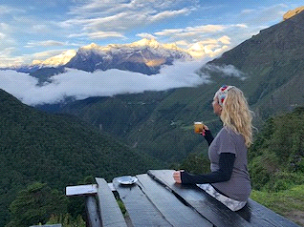

I am writing this blog for all the people out there searching for information on trekking to Everest Base Camp during the summer. I couldn’t find anything on the internet about us-the people who trek to EBC during the monsoon season. Perhaps you are a teacher and the only time you can trek in Nepal is summer. Or you are in between jobs. Or you love the rain. Whatever! Let’s talk about trekking to EBC during the rainy season.
Everything you read on the internet and in guide books will deter you from trekking to EBC during the rainy season. In fact, most of the trekking companies don’t even offer trekking to EBC in the rainy summer season. Wrong! I am here to encourage you to trek to EBC during the rainy summer season. Here is why:
- No crowds! You and the 20-30 other trekkers will get to know each other on the trail and you will know you are in an exclusive “cool kids” club not afraid of the rain on the EBC trek in the summer. There is an amazing camaraderie on the trek in the summer. The only people you will see are your fellow few trekkers, porters carting supplies up and down the mountains, locals walking and a couple horses and yaks (most are out for the summer on “vacation” grazing). There are no hour long waits on the suspension bridges that are encountered during high season. It’s just you, your guide and the amazing Himalayas in the summer.
- It’s not cold. I wore short sleeves a few days and a very thin long sleeved top the rest of the trek. How glorious to see the Himalayas in their green glory! The flora and fauna are spectacular, plus you will see the snow-capped mountains. And the waterfalls-too many to count. This is the beauty of summer trekking to EBC.
- Personal attention. There are so few people out in the summer and everywhere you go-you are appreciated! From the tea houses, to your guide, porter and the locals-you are a superstar! You can really get to know the culture of Nepal in the summer as there is almost nobody around. You can talk to everyone and learn everything you want to know.
So, you might now be interested in trekking during the summer to EBC. Here are 10 things I wish I could have found information on and wish I had known before I went trekking.
- It rains. Some days a lot. Some days a little. You need rain gear. Many EBC websites talk about monsoon rains and leeches and that just wasn’t my experience. No leeches, no monsoon rains. A raincoat with a hood, water resistant pants and water proof boots and you will be fine. In 11 days, there was only one day that it rained the entire day. Every other day had just short light rain or no rain.
- Get up early! It’s the rainy season, so expect clouds for many parts of the day. That means that you need to get up early to catch the beautiful sunrise and cloud-free skies. My best views and photos were from 5:00-6:00 am. Tengboche was spectacular both to and from on the trek-highly recommend this spot! Also, Mt. Everest is only ONE mountain-enjoy the beauty of ALL the mountains! Don’t get focused on this one view or you will miss all the other amazing peaks.
- Going DOWN is just as hard as going UP. I had envisioned dancing while sipping an Everest beer on the way down the mountains. WRONG. It is just as hard trekking down the mountains as it was getting up the mountains. One of the reasons is you cover twice the terrain in the same amount of time as you go down. Add to this that the rocks are wet and slippery and you can see why the celebrating only starts once you get to Lukla. It’s an 11 day trek and all 11 days are hard.
- Rest days are not actually restful. It only means you are staying the same place two nights. We hiked for hours on our rest days. I got little rest. If you know ahead of time that rest days are not actually rest, you might not be as grouchy as I was on my “so called rest days.”
- You get to the tea houses in the early afternoon and there is nothing to do. Nothing. It’s low season, so there is nothing open. I repeat-there is NOTHING OPEN AND NOTHING TO DO. Bring cards, books, and anything to entertain yourself and your trek-mates. Unless you like staring into space-bring something to do! Sleeping is not a good option as you will never sleep at night (high altitude sleeping/lack of sleeping is a whole different blog post). I had envisioned book exchanges-no. There was nowhere on the entire trek to exchange a book that I had read with one I would like to read. Bring a reader or carry a bunch of books.
- Don’t plan on taking a shower. There are a couple tea houses on the trek that have showers, but more that don’t have showers. Same goes with washing clothes. Plan on being dirty and if you have the opportunity to clean up-enjoy!
- Keep your cell phone and power bank on your body-even sleep with them! As you gain altitude and the temperature drops, your technology and their batteries will quickly drain. Keep them warm and they will keep working. The higher you hike, the higher the prices to charge your technology. Try solar power banks and keep your money!
- Bring a warm hat, gloves and a pull-over or light down jacket. I literally slept with all of these items. The tea houses are COLD! None have heat and many do not light a fire in the common rooms. When you are trekking you won’t be cold but I guarantee you will be cold in the tea houses. I often thought I would be warmer in a tent!
- Listen to your guide. Your guide is the expert. You know nothing about the Himalayas. Drink 3-4 liters of water per day (bring chlorine tablets. Cold water is free and is environmentally friendly. Add the tablets for your drinking water); eat garlic soup (helps with altitude), no caffeine, no alcohol, and vegetarian. We met people on our trek who ate meat and they were so sick they could not trek. No meat for foreign trekkers!
- EBC is not the same in the summer. It is a rock. A big grey rock. There are no tents, no prayer flags (at least when I was there) and it is pretty anti-climactic---if you let it be. I personally was moved when I saw the icebergs and thought of all the amazing climbers of Mt. Everest. I didn’t need to see all the rest. Prepare yourself if you expect to see what you have seen in photos in the past. There was a giant avalanche a few years ago and EBC is not the same. The importance is the journey, not the destination.
I absolutely loved the summer to trek to EBC. I felt a real connection with the other trekkers, the guides, porters and the locals. I didn’t miss the crowds or the 24/7 glorious views of the Himalayas. I felt lucky to glimpse the beauty of the mountains and appreciated every time they peaked through to show their glory!
One of my favorite photos from the trek
 @MuLisaWright
@MuLisaWrightNote: Please tip your guides and porters well. They work very hard and deserve your appreciation. Remember how many days they have spent ensuring you a safe and happy trek. Plan ahead and bring a sufficient amount of cash to tip your hard working team!